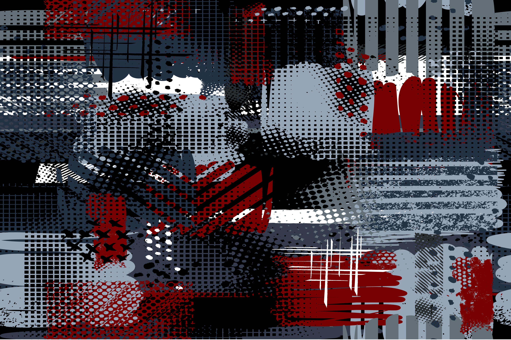
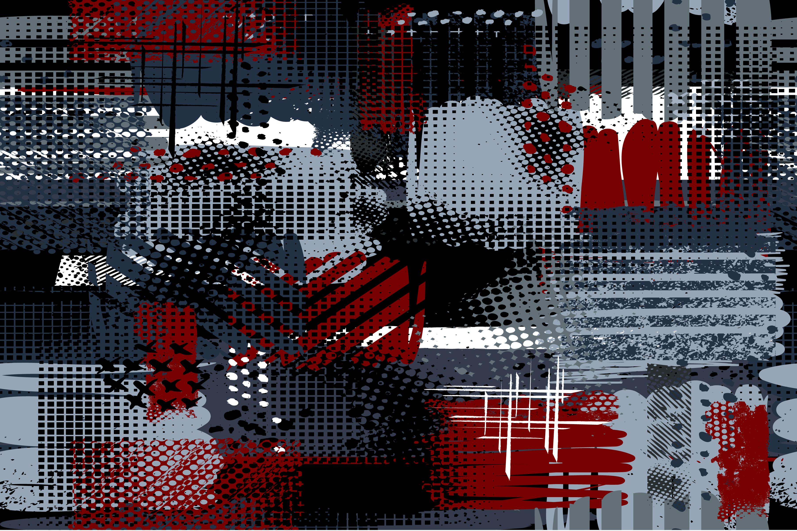

In terms of design, Bauhaus gave me enlightenment, but now I have become obsessed with minimalism because the graphics in minimalism design do not have a trace of redundancy. This kind of simple philosophy is what I am pursuing. This is reflected in the part of design in the project.
Phone number: 0417484714
E-mail: dddys1234@gmail.com
Firstly, about the concept of the project, I had different ideas at first, but then I reached an agreement with everyone. About the music page, I set up a small game that interacts with the user. I use the crossbar to simulate the starting position of the playing, let the user drag the syllable to compose the song. When the song is completed, users can drag the crossbar to the position they want to play, then the song starts playing. However, this plan was eventually given up because it was too difficult to implement.
Based on the contents of the database, we determined that the target audience is the one who is interested in WW1 and music during this period. After that, we set the age period. The range of users I propose is old because the age of their lives is closer to the history of World War I. But then we thought that more young people should be remembered in this history and feel the meaning of WW1, so after discussion, we set the target audience to young people. About the storyboard, I draw another version that is different from the version which was exhibited. I set it as four parts: earphone mode, share with a friend, share with a group of friends and use without a voice. However, since the classification of this version is too cluttered and does not reflect the adaptability of multiple devices on the web, we dropped it in this period.
Secondly, in the part of the interaction, I designed a version of the nostalgic photo frame and picture prompt text when the mouse clicked on the note, however, since the image is directly called from the database, the amount of the image is very large. In this case, it is impractical to add a title to each image, so the final version of these pictures have no comments.
Thirdly, about the general style of the style, I use the minimalism. We vote for the style by the corresponding image shown by me. In addition to the minimizes style, the options are Pop style, Chinese traditional style. glitch style, vaporware style, pixel style, extremely style, cubist style, and super realistic style. We set the rule that "the style with four votes is the best option", and finally, only minimalism got four votes, so we choose it.
 

Fourthly, about the key interaction in music page, I proposed the acceleration function. But compared to the acceleration function, the deceleration function is not very much needed, so we basically did not add this function because of the basic minimalist design style and reduced user considerations.
Lastly, about the presentation in part A, I help make the PPT. I am responsible for a part of the picture selection work. In order to match the theme, all the images are selected from the database, including the start image of each part and the background image of the ww1 page.
However, there are still areas for improvement in this project, such as the integration of the ideas of the two designers. Often there are differences between the ideas of the two designers but finding a balance between the two designs is a very difficult task, often only one of them can be completely abandoned and the other is chosen. In addition, some of my ideas are too idealistic, and some of the designer's ideas are too idealistic, the coder cannot realize them due to technical constraints. So, the designer's idea needs to be more operational. For example, the cubist style previously conceived, which means all the images imported into the database should be transformed into stereoscopic.
In this section, in order to make our work more efficient, I developed a general timeline to make it easy for all team members to have an intuitive understanding of our current progress.
Firstly, I drew the paper prototype to make it easier for teammates to modify. All color schemes are roughly the same as the web pages to be implemented. I use the sketchbook on the iPad. This software can add and hide layers, so we don't have to worry about the loss of previous ideas. All we need to do is write down each person's opinion in purple (distinct from the color of the page) and then hide the layer to get the final plan. Although some adjustments were made in the end, the final web page of this step was made according to this paper prototype generally.


Secondly, I optimized the background set by coder Zichong Chen because the color purity he designed was too high. In addition, in order to make the webpage more chronological, I combined the background texture designed by the team member in the individual project, set the background color transparency to 60% and set it to the upper layer of the layer where the texture is located.
Thirdly, I set the footer to black to correspond to the header. We also set up a share link between facebook and Twitter, although it is a pity that the function of this link is not implemented. In this part of the design, I reached a consensus with desinger Nan Xiao.
Fourthly, I optimized some of the details in the page, such as the arrows that switch images. The angle of the player's reaction arrow is too prominent, so I set up a radius to make it look a bit more rounded and better integrated with the other elements of the page.
Fifthly, I optimized all the music scores. Due to the limitations of the page, we can only put a part of the score, but the original score is a whole page, so I cut and spliced it without affecting the main melody. Finally, the following effects are achieved. All scores and music playback are exactly the same.


However, there are still some minor problems. Firstly, the About function in the footer seems to overlap with some of the headers, you can add other elements to replace or directly delete. In addition, there is no effective communication between the coder of our team, resulting in some parts of the work completely coincident. Given that the quality of one of the coder-designed websites is too low and there is no online editing using filezilla, there is no way to synchronize the communication. We put all the coder work on the other coder, so the assignment is unreasonable, even We have adjusted the number of tasks assigned when we write the report.
In this part, the role played by the designer is limited, because the initial design has
been completed, and only the fine-tuning of the details is left.
First of all, in the photo interface, since we changed the way the image was viewed from a
sliding switch to a keyword search, I removed all the arrows that switch horizontally to
make the style uniform.
Secondly, I modified the interaction process. Since the coder reaction WW1 page and the home
page jump method is difficult to achieve, I will merge the two pages, leaving only the home
button in the header.
Thirdly, I modified the way the music interface chose album. Since the original range of the
stacked albums is too small to click, and the selection method is not intuitive, I proposed
the idea of spreading them out for the coder.
Fourthly, because the slow play effect I'm conceiving is difficult to implement, we can only
remove it, leaving only the play and pause functions.
Fifthly, because of the size problems in the implementation, for example, some paragraphs
are too long to cause the displayed notes to be abnormally small. I have modified the music
score again.
Sixthly, we removed the click-and-switch interaction of the about interface I designed
earlier, because it doesn't show everyone's data at the same time.
Seventhly, in order to balance the text of the page, I reversed the text and image position
on the music detail page.
Overall, after many adjustments, the website has been greatly improved. After removing the inefficient design scheme with the minimalism as the guideline, the webpage has become more concise and practical.
In terms of group work, we have completed the tasks in time according to the plan, and we can communicate with each other in time to improve efficiency. Therefore, I think the project was a success.

From my first journal, my original expectations are mastering the ideation process, the programming process such as PHP and JS, and communication of ideas. The best thing I know about is the ideation process because I have to generate a large number of ideas and implement them. In this iterative process, I have a very deep understanding of the idea process and I am also skilled at communicating ideas. However, since I am a designer in the project, I am still weak in the programming process. Although I have learned a lot in the workshop, I have not practiced it. Therefore, it cannot be used flexibly. Although there were many setbacks in the process, I always insisted on expectations as I progressed in the course.
Learning across the course:
In the contact, the most profound thing I learned is how to communicate. In worldcafe, I learned how to listen to the ideas of multiple people and introduce them to the concepts I understand while hosting the presentation. In addition, I understand that when the idea is stuck, the most effective way to solve the problem is to communicate with others, instead of thinking about it yourself, such as consulting tutor, as long as we clear the questions we need to ask in advance, usually we can get very good guide.
In the process of completing the assessment, I understand the importance of reasonable time and efficient communication, which is the key to completing the assessment in time. In addition, the rational allocation of tasks is also very important. It is critical that everyone is responsible for what they are good at.
Changes to improve the experience of the course:
I think that if the workshop can get more help and guidance from the instructor, my learning will be more efficient. Usually I will get stuck with a problem for a long time. If the tutor can help at this time, the process will speed up a lot. In addition, the work of the workshop does not have an assessment mechanism, so students sometimes do not have to do it. If the assessment mechanism for assignments is increased, students will improve their efficiency by creating a sense of urgency.
About the course itself
This course contains a lot of content, we can learn very rich content, such as generating ideas, communicating with partners, arranging time, coding and designing. But my think group task should be set more rigorous assessment the mechanism clearly divides the tasks that each person has to accomplish, so that each team member can be urged to invest more in the part he is responsible for, and the efficiency of the task and the quality of the work will become higher.
minimalism style:
Images Used: Original Presentation templates or corporate booklet. Easy Use in creative
flyer and style info banner, trendy strategy mockups. Simple modern Slideshow or Startup.
ppt., Soikina Kateryna; retrieved from shutterstock.com
(https://www.shutterstock.com/zh/image-vector/original-presentation-templates-corporate-booklet-easy-756411511)
Last Accessed 31/10/2019
pop style:
Images Used: Special Offer Winter Sale. Poster with Pop Art Retro Comic Wallpaper on
Background. Vector illustration, Very_Very; retrieved from shutterstock.com
(https://www.shutterstock.com/zh/image-vector/special-offer-winter-sale-poster-pop-569419417)
Last Accessed 31/10/2019
Chinese traditional style:
Images Used: Mountains in fog hand drawn with ink in minimalist style on white background.
Traditional oriental ink painting sumi-e, u-sin, go-hua. Hieroglyphs - eternity, spirit,
peace, clarity, Elina Li; retrieved from shutterstock.com
(https://www.shutterstock.com/zh/image-vector/mountains-fog-hand-drawn-ink-minimalist-637784311
) Last Accessed 31/10/2019
glitch style:
Images Used: Screen glitches letters set. No signal or bad signal for vector alphabet. Led
screen rgb error effect for font. Typography design, artyway; retrieved from
shutterstock.com
(https://www.shutterstock.com/zh/image-vector/screen-glitches-letters-set-no-signal-1451149721)
Last Accessed 31/10/2019
vaporwave style:
Images Used: Ultraviolet vaporwave synthwave style illustration 80s - 90s colorful low poly
design. Vector cityscape card background illustration. Creative postmodernism artwork with
lights in night landscape, SilvieMiskova; retrieved from shutterstock.com
(https://www.shutterstock.com/zh/image-vector/ultraviolet-vaporwave-synthwave-style-illustration-80s-1188033346)
Last Accessed 31/10/2019
pixel style:
Images Used: Start game, choose player, space pixel game in purple color decorated by stars,
screen of war video-game with wye sign, shine element, adventure vector, menu for pixelated
app games, robuart; retrieved from shutterstock.com
(https://www.shutterstock.com/zh/image-vector/start-game-choose-player-space-pixel-1423188944
) Last Accessed 31/10/2019
extremely style:
Images Used: Abstract dark seamless grunge pattern for boy and girl. Urban style modern
background with strips, dots, squares and sports elements. Drive modern creative wallpaper
for guys, Matisson_ART; retrieved from shutterstock.com
(https://www.shutterstock.com/zh/image-vector/abstract-dark-seamless-grunge-pattern-boy-1465755350)
Last Accessed 31/10/2019
cubist style:
Images Used: tribute to Picasso, cubist photograph of the transparent blue waters with foam,
sea, atlantic ocean, series of photographs with cubist effects,artistic photography,
contemporary art, Munimara; retrieved from shutterstock.com
(https://www.shutterstock.com/zh/image-photo/tribute-picasso-cubist-photograph-transparent-blue-1150313234)
Last Accessed 31/10/2019
super realistic style:
Images Used: Super car with hot brake on black background, d1sk; retrieved from
shutterstock.com
(https://www.shutterstock.com/zh/image-vector/super-car-hot-brake-on-black-1522891238) Last
Accessed 31/10/2019
Others:
Kilmer, A. D., & Civil, M. (1986). Old babylonian musical instructions relating to
hymnody. Journal of Cuneiform Studies, 38(1), 94-98.
Barsrsind(16/06/2015). Vintage gramophone set. Retrieved from:
https://depositphotos.com/75537245/stock-illustration-vintage-gramophone-set.html
Paomedia(n.d.). disc-vinyl-icon. Retrieved from:
http://www.shejiye.com/index.php?m=content&c=index&a=show&catid=22&id=1602
91
WangYi Cloud Music. Retrieved September 6, 2019, from: https://music.163.com/
Last.fm. Retrieved September 6, 2019, from: https://www.last.fm/
StreetVoice. Retrieved September 6, 2019, from: https://streetvoice.cn/
Chinese Poster. Retrieved September 6, 2019, from: https://chineseposters.net/
WorldWarOneColorPhotos. Retrieved September 6, 2019, from:
https://worldwaronecolorphotos.com
State Library Queensland. (2018). Music Queensland World War 1. Retrieved
September 6, 2019, from
https://www.data.qld.gov.au/dataset/state-library-of-queensland-music-queensland-w
orld-war-1
State Library Queensland. (2015). The Queenslander newspaper photographs
1914-1918. Retrieved September 6, 2019, from
https://www.data.qld.gov.au/dataset/slq-the-queenslander-newspaper-photographs-1
914-1918
Musescore. Retrieved September 6, 2019, from: https://musescore.org/en
Vectorstock(n.d.). Old photo frame vector image. Retrieved from:
https://www.vectorstock.com/royalty-free-vector/old-photo-frame-vector-6809571
Notion (n.d.). Retrieved October 17, 2019, from:
https://www.notion.so/Week-9-Practical-Outline-1143044f15a642a78bfd81c3584951
1d
jQuery(n.d.). Retrieved October 17, 2019, from:
https://code.jquery.com/